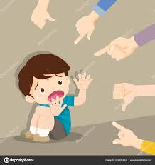

Mengenal dan Mencegah Bullying di Lingkungan Sekolah

Bullying atau perundungan adalah tindakan menyakiti orang lain baik secara fisik maupun mental.
Biasanya terjadi di lingkungan sekolah atau media sosial.
Perundungan bisa menyebabkan trauma berkepanjangan pada korban.